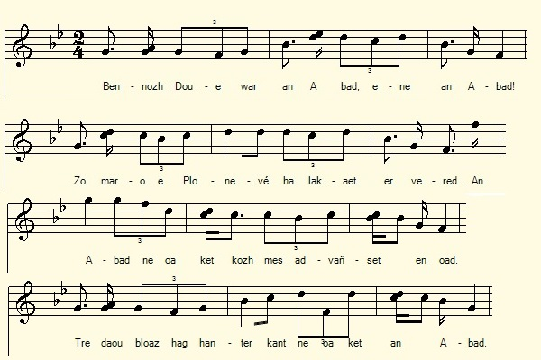
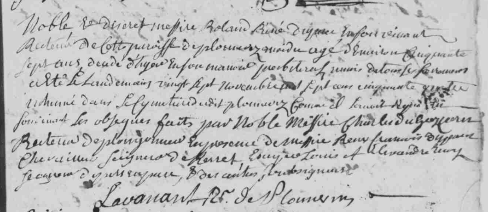

An Aotrou Kersalaün
M. l'Abbé de Kersalaün
The Rev. Parson of Kersalaün
Chant collecté par Théodore Hersart de La Villemarqué
dans le 2ème Carnet de Keransquer (pp. 147 / 78) .

Òran don Èideadh Ghàidhealach
Arrangement Ch. Souchon
|
A propos de la mélodie: Remplacée ici par "Òran don Èideadh Ghàidhealach" (Chant du costume des Highlands" qui accompagne le poème homonyme de Duncan Ban McIntyre dans "Orain agus dana Gaidhealach le Donnchadh Bàn Mac an t-Saoir". La présente gwerz a été notée deux fois par La Villemarqué: vers 1841, dans la région de Leuhan et le 7 septembre 1863, peut-être dans la même région. Dans cette seconde version, la strophe ajoutée après coup, page 253 "Ar c'hleier...tad ker" est un quatrain de vers de 13 pieds avec une césure après le 8ème pied, forme qui épouse le mieux la logique du texte. Le chant écossais a exactement la même structure (cf. http://chrsouchon.fr/jacobe.html chant d17). A propos du texte Ce chant figure 2 fois dans le carnet N°2. La version des pages 147/78 et 148 doit avoir été collectée en 1840 ou 1841 dans la région de Leuhan, comme les chants qui la précèdent et la suivent. Le titre surchargé que la transcription en ligne nous suggère de lire "De Mr. Kersalaün", dirige notre attention vers le secteur Plonevez-du-Faou - Leuhan - Pleyben, compte tenu des autres occurrences du nom "Kersalaün" dans le carnet N°2: Je dois aller à Kersalaün / Parler à ces gens riches." Les bases de données généalogiques consultables en ligne ne donnent aucun résultat concluant pour "Kersalaün". En revanche, si l'on entre le nom "Du Parc", on est dirigé vers un "Noble Rolland-René du Parc de Kerret", né à Guerlesquin en 1698, mort en 1754, (à l'âge de 56 ans!) qui fut recteur de Plounevez-Moëdec de 1730 à 1754. Les toponymes en caractères gras apparaissent dans la dernière strophe (12) de la version 1 où ils ne semblaient pas à leur place. La gwerz provient de Plounévez-Moëdec en Trégor (à l'ouest de Belle-Isle-en-Terre). Environ 85 ans après les événements qu'elle décrit on la chantait dans les Montagnes Noires, mais le Plonevez de la chanson était Plonévez-du-Faou et la famille de Kersalaün de Pleyben avait remplacé les Du Parc de Kerret. C'est ce qu'en termes savants on appelle une "gwerz exogène". |
About the tune Replaced here by "Òran don Èideadh Ghàidhealach" (Song to the Highland Garb "which accompanies the homonymous poem by Duncan Ban McIntyre in" Orain agus dana Gaidhealach the Donnchadh Bàn Mac an t-Saoir ". This present gwerz was noted twice by La Villemarqué: around 1841, in the Leuhan area and on September 7, 1863, possibly in the same region. In this second version, an ulterior addition on page 253 "Ar c'hleier ... tad ker" is a quatrain of 13 foot verses with a break after the 8th foot, a form which best accounts for a logical rendering of the text. The above Scottish song has exactly the same structure (cf. http://chrsouchon.fr/jacobe.html : chant d17). About the lyrics This song appears twice in La Villemarqué's notebook N ° 2. The version on pages 147 / 78 and 148 should have been collected in 1840 or 1841 in the Leuhan area, like the songs that precede and follow it. The overloaded title which we read "De Mr. Kersalaün", as suggested by the online transcription, draws our attention to the area Plonevez-du-Faou - Leuhan - Pleyben , on account of the many other occurrences of the name " Kersalaün "in notebook N ° 2: I have got to go to Kersalaün / And talk to these rich people. " The online genealogical databases give no conclusive result for "Kersalaün". On the other hand, if you enter the name "Du Parc", you are directed to a "Noble Rolland-René du Parc de Kerret ", born in Guerlesquin in 1698 , died in 1754, (at the age of 56!) who was the parson of Plounevez-Moëdec from 1730 to 1754. The placenames in bold characters appear in the last stanza (12) of version 1 where they feel out of place. The gwerz comes from Plounévez-Moëdec in Trégor (west of Belle-Isle-en-Terre). About 85 years after the events it describes it was sung in the Black Mountains, but the Plonevez in the song was now Plonévez-du-Faou and the Kersalaün family of Pleyben had replaced the Du Parc de Kerrets. This is what in scholarly terms is called an "exogenous gwerz" . . |
VERSION 1 - notée vers 1841
|
BREZHONEK p. 147 / 78 1. Bennozh Doue war an abat, ene an abad Zo marv e Plonevez, ha lakaet er vered, An abad ne oa ket kozh met avañset en oad, Tre daou bloaz hag hanter-kant ne oa ken an abad [1]. 2. D'ar pardon Kersalaun, o-deus an dud klevet, E oa skoet an abad gant ar c'hleñved Met chom a reas d'ar ger, ne yeas ket d'ar pardon, Kemen-se a zeblante a oa touchet e galon. [2] 3. Da lar an oferenn eizh eur e ilis Plonevez Reiñ ar bennozh d'an holl dud vit ar wech divezañ. A-benn daou pe dri devezh eñ lare d'ar c'hure Ha d'an aotrou Salomon a oa eno ivez: 4. - Gant Doue, ma breudeur beleien, Digas din er memes amzer sakramant an nouenn. - Kemer a reas an(ezh)e. gant un uvelded vras D'ober amand enorus bouchat da droad ar groaz 5. Kemer a reas an(ezh)e. gant un uvelded vras D'ober amand enorus bouchat da droad ar groaz Hag unan a oa kaset, un espres a oa kaset [3] D'an itron Kersalaun da zont d'ar ger timad. 6. - Hastit, hastit Itron vat, hastit dont d'eñ gwelet 'vit kimiadañ diganeoc'h abarzh mont d'oc'h ar bed.- An itron a Gersalaun 'n'em lakaas da ouelañ An abad d'he frealziñ evitañ da vout klañv. p. 148 7. - Tavit Itron, O tavit, tavit, na ouelit! [4] An holl a rankomp mervel, ha dilezel ar bed. - A-barzh neuz a wer a oa bet lakaet [5] E-barzh ar presbitoer o c'hortoz bout douaret, 8. O c'hortoz e vreur gabiten oa aet e-maez ar vro, [6] On a oa e ker a Roazhon, aet oa gant (kalz) ar [s]tadoù Neuze souden a teue, o ya, ne oa ket pell D'eñ lakaat da interiñ hag eñ gwisket e gwenn. 9. Na pa eaz kuit ar c'horf, o vont maez an ti Kalz a dud da ouelañ, o ya, da ouelañ kriz ; Koulskoudé an dud a arme o-deuz kalonoù kriz. [Koulskoudé an dud a arme o-deuz kalonoù kriz.] 10. Kriz a vije [er galon, an hini na ouelje] Barzh ar veret Plonevez nep a vije, O welet ar groaz arc'hant o vonet da heul ar bez, Ar veleien a gane, ar c'hleier a vralle; 11. Mar vije gorroet kuit, weler a-zi-a-bell [7] Skrivet a oa warne da nep a ouie lenn: - Ha c'hwi Aotrou Salomon, c'hwi hoc'h-bet an avantaj Da interiñ an abad: pa oa aet, it en e blas! 12. Dudigaik (?) oa an abad, c'hwi Aotrou ne 'n oc'h ket, D'eus ar parez Gwerleskin, d'eus ar vaner Kerred, Barzh ar vered Plonevez, e-kichen an nor-tal Eo en e chas e repoz hag e ene er c'hloar! [8] KLT gant Christian Souchon |
TRADUCTION FRANCAISE p. 147 / 78 1. La bénédiction de Dieu sur l'âme de l'abbé Qui mourut et que l'on mit en terre à Plonevez! Sans être vieux, bien que son âge fût avancé, Il mourut agé de cinquante-deux ans passés. [1] 2. Au pardon de Kersalaün les gens ont appris, Qu'il avait été frappé par quelque mal subit Et qu'il restait chez lui, ne viendrait pas au pardon, Cela démontrait combien son mal était profond. [2] 3. Il dit la messe de 8 heures à Plonevez L'ultime bénédiction à tous il put donner. Mais au bout de deux ou trois jours, au vicaire il dit Et le seigneur Salomon était présent aussi: 4. - Pour l'amour du Ciel, frères prêtres, faites-moi donc Porter - et sans plus attendre - l'extrème-onction! - Il la reçut dans l'humilité, fit de surcroît Amende honorable en baisant le pied de la croix 5. Il la reçut dans l'humilité, fit de surcroît Amende honorable en baisant le pied de la croix. A Kersalaün un courrier exprès fut dépêché [3] Pour que la dame des lieux vienne sans plus tarder. 6. - Hâtez-vous, hâtez-vous noble dame de venir Il veut vous faire ses adieux avant de mourir. - La dame de Kersalaün s'était mise à pleurer. L'abbé la consola, tout malade qu'il était. p. 148 7. - Madame, consolez-vous, allons, ne pleurez pas [4] Tous nous devons mourir, c'est notre sort ici-bas. - Dans une vitrine (?) de verre on plaça son corps [5] Au presbystère, ne pouvant l'inhumer encor. 8. Sans son frère, un capitaine qui n'était point là [6] Mais à Rennes où s'étaient réunis les Etats [de Bretagne]. Il vint enfin, mais Il s'en fallait de peu vraiment Pour qu'on ne l'ait enterré déjà, vêtu de blanc. 9. Et lorsque l'on sortit le corps à l'extérieur Tout le monde et le capitaine ont versé des pleurs, Bien que les hommes d'armes aient le coeur endurci. [Bien que les hommes d'armes aient le coeur endurci.] 10. Ah, bien cruel [le coeur de quiconque étant allé] Au cimetière de Plonevez, quel qu'il fût, n'eût pleuré En voyant la croix d'argent dominant le tombeau, Les prêtres qui chantaient, les cloches sonnant bien haut; 11. Tous verraient de loin, les eût-on enlevées plus tôt [7] Ecrits dessus pour ceux qui savent lire ces mots. - Monsieur Salomon, c'est donc à vous que revient l'avantage D'enterrer l'abbé: prenez sa place sans ambages! 12. L'abbé vivait à aise (?). Mais vous ne l'êtes point, Prêtres du manoir de Kerret ou de Guerlesquin Au cimetière de Plonevez, finit l'histoire: Il repose en sa chasse et son âme dans la gloire! [8] Traduction Christian Souchon (c) 2020 |
ENGLISH TRANSLATION p. 147 / 78 1. The blessing of God be on the soul of the abbot Who died in Plonevez, and was buried in the cemetery The abbot, without being very old, was not young, He died in his fifty-second year. [1] 2. At the Kersalaün "Pardon" feast people have heard That the abbot had been struck by disease. And that he would stay at home and not come to the feast, And it was a heartbreak for him. [2] 3. He would say the 8 o'clock mass in the church of Plonevez And give everyone the blessing for the last time. After two or three days, he said to the curate And to Sir Solomon who was there too: 4. - With the body of our Lord, my brethren, Let me have the Last Anointing at the same time. He received them with great humility To make amends, he kissed the foot of the cross 5. He received them with great humility To make amends, he kissed the foot of the cross Now an expressman was sent with the message [3] For the Lady of Kersalaün that she had to come immediately. 6. - Hasten, hasten noble lady to come and see him Who wants to say goodbye to you on leaving this world. The Lady of Kersalaün started to cry on seeing him But he endeavoured to console her, though he was the sick one. p. 148 7. - Be quiet, Lady, don't cry [4] We all have to die and leave this world. - In a glass case they laid his body [5] In the presbytery in wait to be buried, 8. Waiting for his brother, a captain to come [6] Who had left for Rennes city summoned to the States [of Brittany]. At last he came. It wouldn't have taken much for them To have buried him, as they had already clad him in white. 9. And when they took the body outside the house All started crying, crying bitterly, Although they were men-at-arms with hardened hearts. [Although they were men-at-arms with hardened hearts.] 10. Cruel the heart that would not have cried At the Plonevez cemetery, whoever he was, Seeing the silver cross placed near the grave, Hearing the singing priests, the ringing bells; 11. Had the bells been removed, all would have seen from afar, Written on them for all who can to read. [7] - Reverend Solomon, enjoy the advantage Of burying the abbot. He's gone you take his place. - 12. The abbot was in easy circumstances (?) here, unlike you Who come from parish Guerlesquin, or Kerret manor! - In the Plonevez cemetery, near the portal He rests in his shrine and his soul in glory! [8] |
VERSION 2 - notée en 1863
|
BREZHONEK p. 251 Variante - Abbé du Parc 0. Klevet ho-peuz aliez komz d'eus Abad Dupar A oa person e Plonevez pa oa war an douar? 1. Mez marv hag interet e bered Plonevez Gant Doue, hag egistañ, baradoz d'hon ene! An abad ne oa ket kozh met brevet gant ar mad Pevar bloaz hag hanter-kant, ne oa ken an abad, [1] 2. Pa oa skoet an abad da gentañ gant kleñved, Oa Pardon St Salaün, 'vit ma intentfet. Mez chomet e oa er ger, oa ket deuet d'ar pardon, Kement-se a ziskoueze oa skoet e galon : [2] 3.1. Lavar an oferenn eizh eur e iliz Plonevez 3.4. Nag an aotrou Salaun (Salomon) a oa eno ivez : 3.3. 'Benn eur pennadig goude lavarez d'e gure: 4.1. Digasit din sakramant anaon, ma Doue." "Digasit din, ma Breur ker, sakramant an nouenn,. 4.a. (Salomon,) n'on ket evit echuiñ, hirio va oferenn". p. 252 4.3. Degemer reas an den gant ur uveldet vraz, Hag en ur stouiñ e benn, bouchet da droad ar groaz, 5.a. Hag en eur stouiñ e benn war diri an aoter, Hag a-hed e gorf eno, gwisket e zilhad kaer. 5.3. Benn ur pennadig goude e oa kaset un espres, [3] Da vaner Kersalaun a c'herc'h d'an itron gaezh. [4] 6.a. ( 'Ma o vont kuit ho preur ker, itron, deuit!) 6.1. Da lavar dezhi : « Deuit buhan, itron kaezh, d'her gwelet, Ma kimiadfe ouzhoc'h 'benn mont diwar ar bed ; (x) (x) An itron p'he-deus (klevet) gwelet, n'em lakaas da ouelañ : An abad he c'honforte 'vitañ da vezañ klañv: 7. - Tavit, ma c'hoar, emezañ, tavit, na ouelit ket Rak holl e renkomp mervel ha dilezel ar bed . 7.a. Ya, holl e renkomp mervel ha dilezel ar bed-mañ Pa zeuy Doue d'hor gervel 'benn en ne-meur amañ . ... renkomp laouen gantañ! - 10. Barzh e bered Plonevez an deiz neb a vije.] 7.3. Benn tri devezh war nugent e oa bet kempennet, (embaumé) Ar c'horf barzh ar presbital c'hortoz, o vezañ nouet, [5] 8.1. C'hortoz e vreur Salaün oa aet e-maez ar vro, Oa aet da ger a Roazhon, aet oa (gant kalz) d'ar Stadoù :[6] 9. Pa zeuas ar c'horfad paour e-maez dimeus ar porzh Holl 'n'em lakont da grial, oh ya, da grial forzh, p. 253 Koulskoude an dud-arme o-deus kalonoù kriz, Holl 'n'em lakais da loskel un herrad hag ur c'hriz, 10. Kriz a vije er galon, daoulagad na ouelje, E_barzh e bered ( O welet ar groaz arc'hant 'vont he- unan d'ar bez, Ar veleien a gane (ouele), ar c'hleier a vralle, 11.a. Na vrallañ 'rae ar c'hleier, na vrallañ raent uhel, 11.1. Kement ma vijent klevet demeus a zi-a-bell (1) (1) Ar c'hleier a lavare, da nep ' halle kompren : [7] "Setu marv ur beleg, ur c'hristen, mat a zen, 12.a. Un den a vrud hag a stud, a gare Yann Kouer, N'eus hini e Plonevez na ra kañv d'un tad ker." 12.2. Barzh e bered Plonevez, e kichen an nor-tal Ema e gorf o kousket hag e ene er c'hloar. [8] [9] [10] KLT gant Christian Souchon |
TRADUCTION FRANCAISE p. 251 Variante 0. De cet Abbé du Parc vous a-t-on souvent parlé? Quand il fut sur terre, il fut recteur de Plonevez. 1. Mort, c'est au cimetière de Plonevez qu'il git Dieu garde nos âmes et la sienne au paradis! L'abbé n'était pas très vieux, mais il fit tant de bien Qu'à cinquante-quatre ans il mourut d'un mal soudain. [1] 2. La première fois qu'il fut terrassé par ce mal, Avait lieu le pardon de St Salaün: jour fatal: Il était resté chez lui; sans aller au pardon, C'est dire comme il était atteint d'un mal profond : [2] 3.1. A la messe basse en l'église de Plonevez 3.4. A laquelle le seigneur Salomon assistait, 3.3. A son vicaire il disait après cette émotion 4.1. "Apportez-moi, mon bien cher frère, l'extrème-onction,. Apportez-moi l'extrème-onction, pour l'amour de Dieu 4.a. Terminer ma messe hélas, aujourd'hui je ne peux". p. 252 4.3. Il reçut le sacrement avec humilité: Le pied de la croix, baissant la tête, il embrassait. 5.a. S'inclinant jusqu'à toucher les marches de l'autel, Il gisait de tout son long dans l'habit solennel. 5.3. Sur ce, de toute urgence l'on envoya quelqu'un [3] Quérir la pauvre dame du manoir de Kersalaün [4] 6.a. (- Votre frère va trépasser, Madame, venez!) 6.1. Lui dit-on: « Venez vite, pauvre dame, il voudrait, Avant de quitter ce monde, de vous prendre congé (x) (x) En entendant cela, cette dame sanglota Et bien qu'il fût malade, l'abbé la consola,: 7. - Du calme, ma soeur, disait-il, cessez de gémir! Tous nous devons quitter ce monde, devons mourir. 7.a. Oui, de ce monde un jour, tous il nous faudra partir Quand Dieu vient nous appeler, qu'il faut partir d'ici [Quand Dieu nous appelle,] il nous faut Le suivre réjouis! - 10. Quels qu'ils fussent, au cimetière de Plonevez]. 7.3. On conserva jusqu'à vingt-trois jours après la mort(embaumé) Muni de l'extème-onction à la cure le corps: [5] 8.1. Jusqu'au retour de son frère, Salaün, parti. Pour Rennes participer aux Etats du pays [de Bretagne]. [6] 9. Quand le pauvre corps embaumé sorti de la cour Tous se mirent à gémir et pleurer sans détour, p. 253 Bien que les hommes d'armes aient le coeur endurci, Tous se mirent à pousser des soupirs et des cris 10. Quel coeur cruel eût eu celui qui n'eût point pleuré, En ce grand jour au cimetière Voyant vers la tombe la croix d'argent s'avancer. Tandis que le prêtres chantaient (pleuraient), les cloches sonnaient, 11a. Comme elles sonnaient ces cloches, sonnaient haut et fort, 11.1. Afin que leur chant soit entendu loin au dehors(1) (1) A qui pouvait le comprendre, les cloches disaient : [7] "Un prêtre, chrétien, homme de bien est décédé! 12.a. Célèbre et savant, et ami de Jean Paysan, En lui, nul à Plonevez qui ne pleure un parent." 12.2. Au cimetière de Plonevez, près du portail Son corps dort et son âme exulte au divin bercail. [8] [9] [10] Traduction Christian Souchon (c) 2020 |
ENGLISH TRANSLATION p. 251 A variant 0. You often heard of Abbé du Parc Who was parson of Plonevez when he was on earth. 1. But he died and was buried in Plonevez cemetery May God, as for him, open paradise to our souls! The abbot was not old, but his benevolence told hard on him The abbot was only fifty-four years old, [1] 2. The first time he was stricken by disease, It was on St Salaün's "pardon" day, as you will understand: He stayed at home, could not attend the celebration This shows you that he was stricken to the heart. [2] 3.1. He was saying 8 o'clock mass at Plonevez church 3.4. Which Sir Solomon attended: 3.3. A moment later he said to his vicar: 4.1. "Bring me, my dear brother, the Last Anointing oil ,. Bring me the Last Anointing, for God's sake 4.a. (Salomon) I will not be able to finish my mass today. " p. 252 4.3.. He received the sacrament with great humility, And bowing his head, he kissed the foot of the cross, 5.a. He bowed his head until he touched the steps of the altar, Where he was lying full length in his beautiful chasuble. 5.3. Shortly after, they sent an expressman [3] To Kersalün mansion to call on the unhappy lady to come. [4] 6.a. - (Your dear brother is about to pass away, Madam, come), 6.1. She was told, "Come quickly, my Lady, to see him, That he may tell you farewell on leaving this world; (x) (x) On hearing this, the lady began to cry: It was the abbot who consoled her, though he was sick: 7. - Be quiet, my sister, he said, stop crying! All of us must die and leave this world. 7.a. Yes, we all have to die and leave this world When God comes to call us, we have to leave from here [When God calls us,] let us obey in joy! - 10. At the Plonevez cemetery that day, whoever they were]. 7.3. Up to twenty-three days he remained embalmed In the presbytery, provided with the anointing sacrament: [5] 8.1. Waiting for his brother, Salaün, who was not in the country. He had left for Rennes to attend a meeting of the States of Brittany: [6] 9. When the dear embalmed body came out of the yard 16.2. They all started shouting, oh yes, shouting loudly, p. 253 All cried out in pain and lamented, Though these men-at-arms had hardened hearts, 10. How cruel-hearted would have been whoever had not wept, In Plonevez churchyard (church) on this solemn day. Seeing the silver cross advancing, ahead of all, towards the grave, While priests were singing (crying), and bells ringing, 11.a. As they rang these bells, as they rang loudly, 11.1. So that one could hear them from afar (1) (1) The bells said to who could understand: [7] "Behold, a priest, a Christian, a good man who died, 12a. A renowned and learned man he was and a friend to "Farmer John", No one in Plonevez who did not mourn him as he would a father. " In Plonevez churchyard, near the porch His body rests and his soul is in glory.[8] [9] [10] |
NOTES
|
[1] Les registres paroissiaux de Plounévez-Moëdec mis en ligne par les Archives départementales des Côtes d'Armor donnent l'information suivante à la date du 27 novembre 1754 (cf. illustration ci-après): "Noble et discret messire Rolland René Duparc, en son vivant recteur de cette paroisse de Plounevez-Moëdec, âgé denviron cinquante sept ans, décédé dhier en son manoir presbytéral muni de tous les sacrements, le lendemain vingt sept novembre mil sept cent cinquante quatre, a été inhumé dans le cimetière dudit Plounevez comme il lavait requis de son vivant. Ses obsèques faites par noble messire René Charles du Garzpern, recteur de Plougonver, en présence de messire René François Duparc, Chevalier seigneur de Kerret, écuyer Louis et Alexandre Henry seigneur de Porsanparc et des autres soussignants." Les 2 variantes indiquent des âges proches de la réalité: 52 et 54 ans. Par ailleurs, le site "Infobretagne" (http://www.infobretagne.com/plounevez-moedec.html) nous apprend que le Noble Rolland-René du Parc de Kerret fut recteur de la paroisse de Plounévez-Moëdec de 1730 à 1754. [2] L'Abbé Du Parc, selon les 2 variantes, a été victime d'une attaque ou d'un malaise cardiaque, alors qu'il disait une messe basse en présence du seigneur du lieu (un Euzenou de Kersalaün), le jour du pardon de Saint-Salaün (Salomon), sans doute dans l'esprit de la gwerz locale, le pardon en la chapelle Saint-Salomon de Plouyé, le 10 juin, qui comporte une messe suivie d'une bénédiction des chevaux (Pardon ar C'hezeg) et, bien sûr, d'un repas champêtre. La gwerz d'origine envisageait sans doute une autre fête. A Plonevez-du-Faou dont l'église paroissiale est placée sous l'invocation de Saint-Pierre apôtre, le pardon de la paroisse a lieu le second dimanche·du mois d'août, à l'occasion de la fête de.saint Pierre-ès-Liens. Les deux versions précisent bien que le pardon de Kersalaün n'a pas lieu dans cette église. [3] La séquence du messager qu'on envoie en toute hâte porter une lettre est une des figures qu'affectionnent les gwerzioù. Mais on ne peut qu'être intrigué par la formule utilisée ici: "e oa kaset un espres", "on envoya un exprès". Le dictionnaire du Père Grégoire de Rostrenen (1732), montre que ce mot désignait un messager en français: "Exprès: celui qu'on envoie expressément", mais donne le mot breton usuel "Kannad". [4] La dame du manoir de Kersalaün qu'on envoie quérir est appelée par l'abbé "ma soeur" dans la version 2 uniquement . Le site "Généanet" indique que Rolland-René du Parc eut 2 soeurs, Jeanne-Marguerite, née en 1710 et Isabelle Corentine née et décédée en 1713. On ne sait rien de plus à leur sujet. [5] Dans la version 1, le 3ème vers de la strophe 7 est difficilement lisible. On lit, semble-t-il "a-barzh neuz a wer" où "neuz" veut dire "apparence, allure, aspect" et le reste de la phrase signifie "Il fut mis dans un... de verre". Peut-être s'agit-il d'un cercueil avec un couvercle pourvu d'une vitre. On est étonné par le délai de 23 jours qui, dans la version 2, s'écoule entre le décès et l'inhumation, en attendant l'arrivée du frère capitaine. La Villemarqué a écrit à la suite du vers 7.3 le mot "embaumé" pour traduire "kempennet" qui signifie d'ordinaire "arrangé". Il est vrai que, selon Wikipédia, "L'embaumement semble, en Europe, n'avoir été que rarement utilisé, par exemple pour le rapatriement des corps de croisés morts loin de chez eux. Des anatomistes de la Renaissance s'y sont essayés pour conserver leurs spécimens". Mais il faut attendre 1837 pour que soit déposé un premier procédé efficace d'embaument. [6] Rolland-René du Parc avait plusieurs frères: François-René (1696-1773), Etienne-Marie (1704-?) et Jean-Baptiste (1707 - ?). L'ouvrage "Recherches sur les Etats de Bretagne", mis en ligne sur le site "Internet archive" nous apprend que ce dernier était délégué de l''Evêché de Tréguier à la tenue des Etats de 1730. Les registres paroissiaux de Plounévez précisent que ce personnage mourut en 1766, qu'il avait été capitaine au régiment de Brie, (un régiment d'infanterie créé en 1684) et qu'on lui avait décerné l'ordre royal et militaire de Saint-Louis créé en1693 pour récompenser les officiers catholiques et de bonne noblesse les plus valeureux ayant au moins 10 ans de service. [7] "Mar vije gorroet kuit", "si on les avait enlevées", (str. 7) en parlant des cloches de Plonevez-du -Faou, fait allusion à un épisode de l'époque révolutionnaire. La chapelle Saint Herbot possède une grande tour de 8 m de côté et 30 m de hauteur ornée d'un portail dont le tympan montre Saint Herbot portant une longue barbe frisée et où l'on peut lire la date de fondation de ladite tour: 1516. "Une belle cloche ornait ce beffroi. Le 10 prairial an II (29 mai 1794) elle fut descendue et on dut la briser pour la faire sortir de la chapelle. A cause de ses grandes dimensions, avant d'être placée dans la tour, elle avait été fondue dans la chapelle même".(Chanoine Pérennès, "Plounevez-du-Faou, Monographie de la Paroisse", Rennes, Imprimerie bretonne, 1942). [8] "Yann Kouer" (Jean Paysan) dans la version 2 évoque la participation des habitants de Plonévez-du-Faou à la Révolte des Bonnets Rouges de 1675, au cours de laquelle ceux-ci, y compris leurs six ou sept prêtres, mirent à sac le château de Kergoët en Saint-Hernin. En revanche Guerlesquin et Kerret dans la version 1 et le nom de l'Abbé Du Parc, cité au début de la version 2 nous transportent à Plounévez-Moëdec en Trégor, le pays du folkloriste F-M. Luzel. [9] 2 versions "endogènes" Luzel a recueilli en septembre 1849 auprès de Jeanne Le Gall, servante à Keranborn en Plouaret une gwerz de 45 vers intitulée "Abbad Plonevez". Une autre version de cette gwerz, de 42 vers seulement, intitulée "Abbet Duparc" figure, avec la mélodie, dans un "Cahier de 37 chansons" copiées par Yves Le Masson, né en 1871, fils de Louis, sacristain de Plounévez-Moëdec. Le premier document est inclus dans le manuscrit Ms 1020, cahier 4 des "Chansons populaires de Basse-Bretagne recueillies par Luzel" conservé à la Bibliothèque de Rennes Métropole. Le second fait partie du "Fonds Donatien Laurent" de l'université de Bretagne occidentale-CRBC, col.26-34. Cette gwerz "endogène" répond à la plupart des questions soulevées par la version "exogène" recueillie tout d'abord par La Villemarqué: E Plonevez zo un tour war an uhel/ Market war ar "code civil" a weler a ziabell A Plounévez une tour s'élève vers le ciel / Elle est marquée par le code civil. Cela se voit de loin. La carte postale ancienne ci-dessous représente la chapelle de Keramanac'h et son clocher-mur à 3 chambres de cloches dont deux sont vides. [10] Apparentement: Ce chant qui décrit la mort d'une personnalité locale s'apparente à la gwerz du Barzhaz de 1839, Elégie de M. de Nevet, en ce qu'il parle de la mort donnée en spectacle et décrit avec sympathie le décès d'un prélat d'origine aristocratique. Malgré la similitude de titre, il n'y a pas lieu de le rapprocher de L'abbé de Plounévez publié par Luzel dans "Soniou" ; tome II, p. 146, qui relève non pas de l'élégie, mais du persiflage. |
[1] The parish registers of Plounévez-Moëdec put online by the Departmental Archives of Côtes d'Armor give the following information, dated November 27, 1754 (see illustration below): "Noble and discreet Reverend Rolland-René Duparc, in his life time parson of this parish Plounevez-Moëdec, aged about fifty seven years, who died yesterday in his presbytery manor, fortified with the rites of the Church, was the next day, the twenty-seventh of November seven-hundred and fifty-four, buried in the cemetery of said Plounevez, as he had required during his lifetime. His funeral made by Noble Sir René Charles du Garzpern, Parson of Plougonver, in the presence of Knight René François Duparc, Lord of Kerret, Louis and Alexandre Henry Lord of Porsanparc Esq. and the other gentlemen undersigned. " The 2 variants indicate ages close to reality: 52 and 54 years. In addition, the site "Infobretagne" (http://www.infobretagne.com/plounevez-moedec.html) confirms that the Noble Rolland-René du Parc de Kerret was parson of the parish Plounévez-Moëdec from 1730 to 1754, [2] The Abbé Du Parc, according to the 2 variants, fell victim to a heart stroke or sudden disease, while he was saying a low mass in the presence of the lord of the place (an Euzenou de Kersalaün), on Saint-Salaün (Solomon)'s "Pardon" day, very likely understood by the Quimper area gwerz, as the "Pardon" feast celebrated in Plouyé's Saint-Salomon chapel, on June 10th, including a mass followed by a blessing of horses (Pardon ar C'hezeg) and, of course, a country meal. We may assume that in the original gwerz another "Pardon" was meant. In Plonevez-du-Faou whose parish church is placed under the invocation of Saint Peter the Apostle, the Pardon of the parish takes place on the second Sunday of August, on the occasion of the feast of Saint Peter in Chains. We definitely infer from both versions that Kersalaün's Pardon does not take place in this church. [3] The figure of the nimble messenger sent in a hurry to forward a letter is one of the clichés traditional gwerzioù are fond of. But the word used here: "e oa kaset un espres", "they sent an expressman" is puzzling. Father Grégoire of Rostrenen's dictionary (1732) states that the word did apply to a messenger in French: "Express: the one who is sent expressly", but also gives the usual Breton word: "Kannad". [4] The lady of Kersalaün manor who is asked to come is called by the parson "my sister" in version 2 only. The "Généanet" website states that Rolland-René du Parc had two sisters, Jeanne-Marguerite, born in 1710 and Isabelle Corentine born and died in 1713. Nothing more is known about them. [5] In version 1, the third line of stanza 7 is almost illegible. It reads possibly: "a-barzh neuz a wer" where "neuz" means "appearance, look, aspect" and the rest of the sentence means "He was laid in a glass...". Perhaps a coffin with a glass window cover is meant. We are puzzled by the 23-day delay which, in version 2, elapses between the death and the burial, pending the arrival of the brother captain. La Villemarque added after verse 7.3 the word "embalmed" to translate "kempennet" which usually means "arranged". In fact, according to Wikipedia, "Embalming seems, in Europe, to have been used only rarely, for example for the repatriation of bodies of crusaders who died far from home. Renaissance anatomists have tried to use it to keep their specimens." But it was not until 1837 that a first patent for an effective embalming process was registered. [6] Rev. Rolland-René du Parc had several brothers: François-René (1696-1773), Etienne-Marie (1704-?) and Jean-Baptiste (1707 -?). The survey "Research on the States of Brittany", put on line on the website "Internet archive" states that the latter was delegated by the Bishopric of Tréguier to the 1730 session of the Estates of Brittany. The parish registers of Plounévez specify that this gentleman died in 1766, that he had been captain in the regiment of Brie (an infantry regiment created in 1684) and that he had been awarded the Royal and Military Order of Saint-Louis created in 1693 to reward the most valiant Catholic officers of the nobility with at least 10 years of service in the armed forces. [7] "Mar vije gorroet kuit", "if we had lifted them off", (str. 7) applying to the bells of Plonevez-du-Faou, alludes to an episode from the revolutionary era. The Saint Herbot chapel has a large tower (8 m broad and 30 m high), adorned with a portal whose tympanum displays Saint Herbot wearing a long curly beard and a banderole with the date of foundation of said tower: 1516 . "A beautiful bell hung in this belfry. On 10 Prairial year II (May 29, 1794) it was lowered and had to be broken in several pieces to get it out of the chapel. Because of its large dimensions, when it was hung in the tower, it had been melted in the chapel itself ". (Chanoine Pérennès," Plounevez-du -Faou, Monographie de la Paroisse ", Rennes, Imprimerie bretonne, 1942). [8] "Yann Kouer" (Jean Paysan) in version 2 evokes the part played by the inhabitants of Plonévez-du-Faou in the "Red Bonnet Revolt" of 1675, during which they, including their six or seven priests, sacked the castle of Kergoët in Saint-Hernin. On the other hand, the placenames Guerlesquin and Kerret in version 1 and the name Abbé Du Parc quoted in version 2 definitely point to Plounévez-Moëdec in Trégor, the homeland of folklorist F-M. Luzel. [9] 2 "endogenous" versions Luzel collected in September 1849 from the singing of Jeanne Le Gall, a maidservant at Keranborn near Plouaret, a gwerz of 45 verses titled "Abbad Plonevez". Another version of this gwerz, of only 42 verses, titled "Abbet Duparc" appears with the tune to it, in a "Notebook of 37 songs" copied by Yves Le Masson, born in 1871, son of Louis, sacristan of Plounévez-Moëdec church. The former document is included in the manuscript Ms 1020, 4th part of "Popular songs of Lower Brittany collected by Luzel" kept at the Rennes-Métropole Library. The latter is part of the "Donatien Laurent fund" of the University of Western Brittany-CRBC, col. 26-34. This "endogenous" gwerz answers most of the questions raised by the "exogenous", first collected version for which we are endebted to La Villemarqué: E Plonevez zo un tour war an uhel / Market war ar "code civil" a weler a ziabell In Plounévez a tower rises towards the sky / It is branded by Code Civil law. You can see it from afar. The old postcard below shows the chapel of Keramanac'h and its wall-bell-tower with bell-holes, two of which are left empty. [10] Comparison with other songs : This song which describes the death of a local personality is similar to the 1839 Barzhaz ballad, Elegy of Mr de Nevet , inasmuch as it is about a death openly staged as a show and as it describes with sympathy the death of a man of aristocratic origin. Despite the similar title, there is no reason to compare it with The curate of Plounévez published by Luzel in "Soniou"; volume II, p. 146, which is by no means an elegy, but a piece treating a priest with mockery. |
 Abbad Plonevez / Version Luzel / Fonds Luzel, ms 1020
Abbad Plonevez / Version Luzel / Fonds Luzel, ms 1020
Abbet Duparc/ Version Le Masson / / Fonds Donatien Laurent
Mélodie notée par Yves Le Masson

Extrait du registre paroissial de Plounévez-Moëdec du 27. novembre 1754

Château de Kersalaün en Leuhan et Chapelle de Keramanac'h en Plounévez-Moëdec